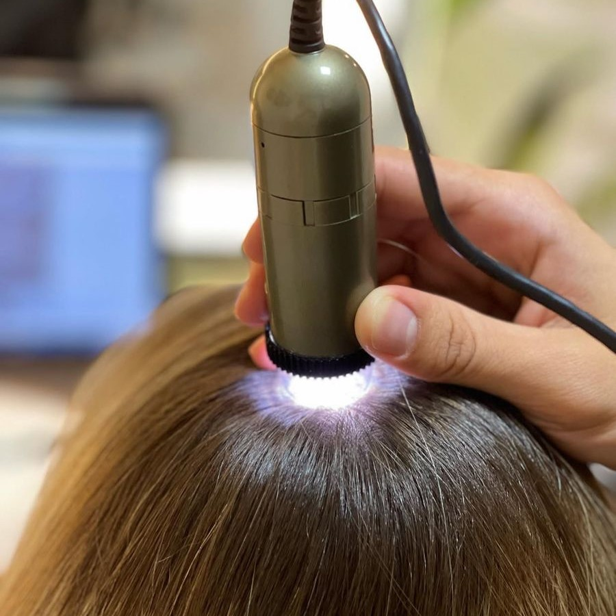

Um conjunto de técnicas e práticas integrativas que tratam pesonalisadamente disfunções no couro cabeludo e fios de acordo com as necessidades e características individuais de cada cliente/paciente visando regular o funcionamento de todo o sistema capilar. O que resulta na melhora do ciclo de crescimento dos fios e no desenvolvimento das camadas da pele no couro cabeludo. Ela Melhora a circulação sanguínea, estimula o crescimento capilar, restaura a beleza e o equilíbrio capilar e pode tratar e prevenir problemas capilares, como queda de cabelo, caspa, oleosidade, quebra e danos.